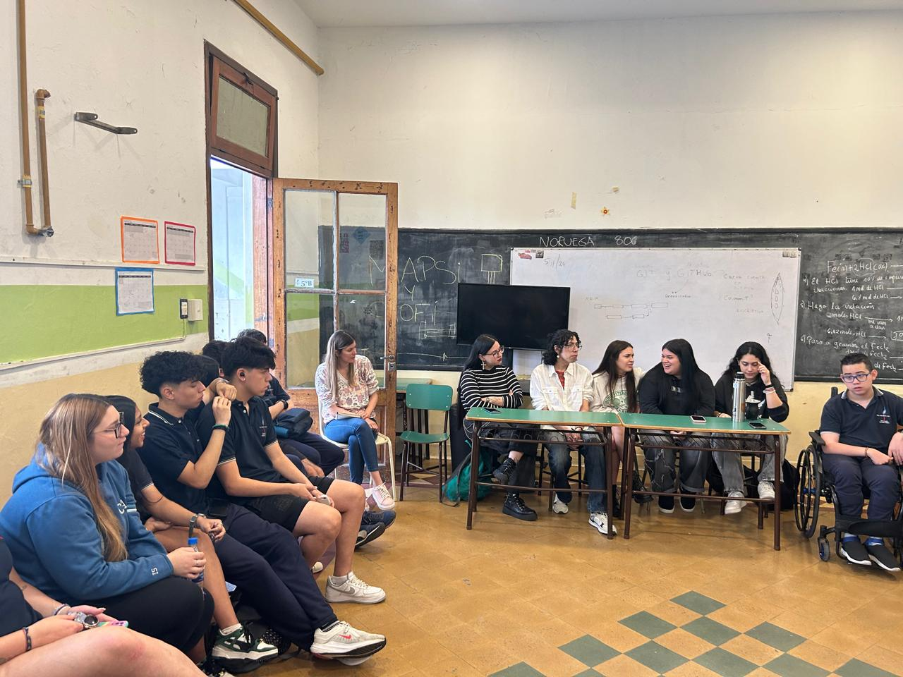
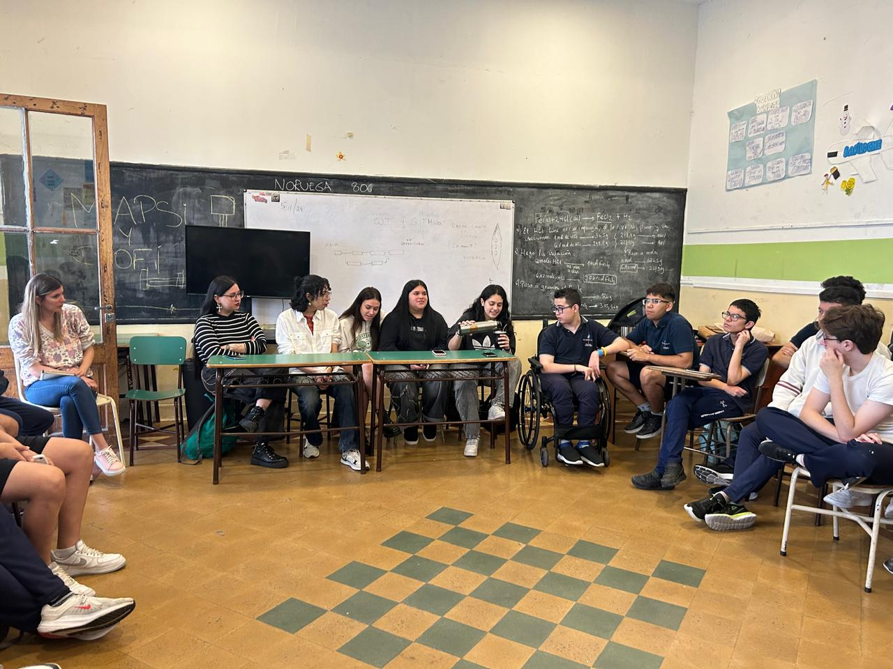

Charla de exalumnos para alumnos de 5to año
Por: Valentina Perez - 5ºB
En dos ocasiones diferentes vinieron exalumnos del CEAES, convocados por la tutora Prof. Alejandra Paganini a contar sus experiencias a los alumnos de 5to año. Respondieron dudas y nos dieron consejos a partir de lo que ellos vivieron después de terminar el colegio. Los alumnos que compartieron esta charla con nosotros están estudiando en distintas universidades como la UAI, UADE, UBA, UCA y otros realizando carreras terciarias. Algunos de ellos tienen trabajo en relación de dependencia.

